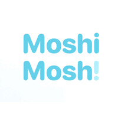
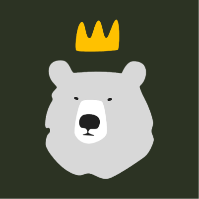
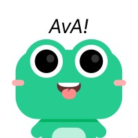
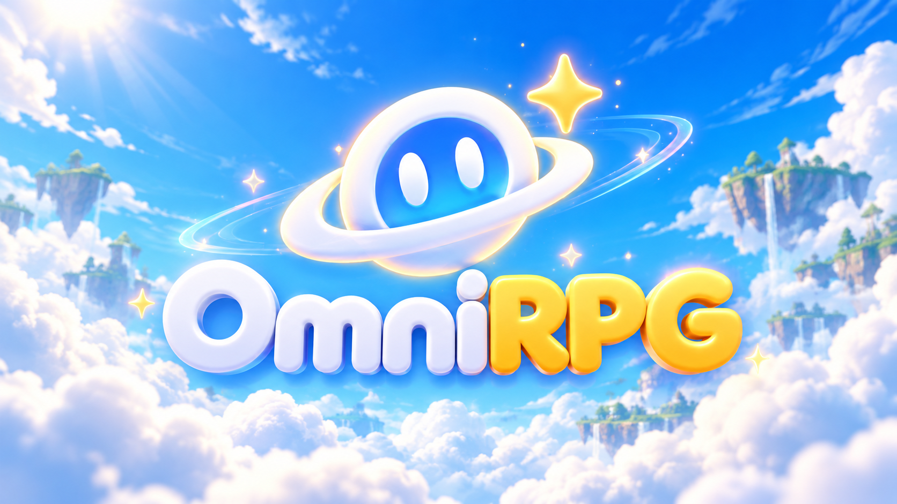

生成式 AI 與產品
在生成式 AI 與產品領域累積工作經驗。



遊戲 × AI × 創作
獨立開發者・創作者
香港
把點子做成可以玩的東西。

OmniRPG · 萬象關於我
從遊戲製作到生成式 AI，
一直在找新點子怎麼變成作品。
我喜歡把複雜的工具變成有趣、好上手的體驗。做過遊戲、AI 工作流與產品，也持續用小作品測試新的想法。現在專注打造 OmniRPG。
平時會寫開發筆記、做遊戲原型，也樂於認識一起創作的人。
創作歷程
從遊戲開發、生成式 AI 到獨立創作。
在生成式 AI 與產品領域累積工作經驗。



用小型作品嘗試不同玩法與創作點子。
打造讓創作者製作 AI 文字遊戲的平台。
遊戲作品